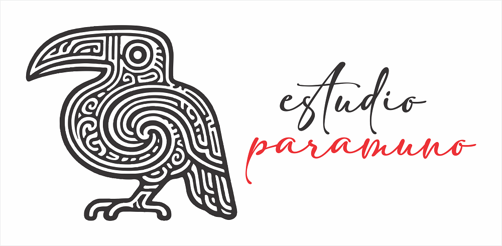

Estudio paramuno
Inicio > Estudio paramuno
Estudio paramuno es el espacio donde toma forma mi trabajo artístico, gráfico, sonoro y material. Ubicado en las laderas cubiertas de niebla de Quisquiza (Cundinamarca, Andes orientales colombianos), es un pequeño atelier independiente dedicado al dibujo, el diseño, la construcción de instrumentos, la creación de títeres, la artesanía de baja tecnología y la escritura experimental.

En la intersección entre memoria, ecología e imaginación, Estudio paramuno explora formas de creación lentas, manuales y territoriales. La corteza, el hueso, la ceniza, el hilo y los materiales reciclados suelen ser puntos de partida — no para obras tradicionales, sino para objetos y narrativas que cuestionan cómo hacemos, preservamos y transmitimos sentido.
El estudio aún está en formación. El trabajo empieza a tomar forma, y este sitio irá presentando progresivamente los procesos, materiales y preguntas que irán emergiendo.
Música
Las grabaciones forman parte de Estudio paramuno como una práctica musical centrada en los instrumentos, la composición y la exploración de tradiciones sonoras. No se conciben como producciones cerradas, sino como pruebas: ensayos con materiales, afinaciones, técnicas, repertorios y modos de ejecución que se exploran en condiciones deliberadamente simples. Incluyen tanto piezas solistas como la composición de bandas sonoras, así como el trabajo con lenguajes musicales diversos abordados como campos de experimentación y reinterpretación. Estas grabaciones extienden el estudio hacia el sonido como práctica, no como resultado final.
Ver todas las grabaciones.
Escritura de ficción
La escritura de ficción también tiene un lugar dentro de Estudio paramuno. No aparece aquí como un ejercicio de evasión, sino como otra forma de exploración: una práctica de imaginación crítica que trabaja con la memoria, el desplazamiento, la historia y sus fracturas. Novelas, relatos y ucronías surgen en este espacio como formas de narrar lo que pudo haber sido, lo que fue distorsionado o lo que quedó en los márgenes, y extienden, a través de otro lenguaje, muchas de las preguntas que atraviesan el resto del estudio.
Ver toda la ficción.
Fotografía
La fotografía forma parte de este atelier como una práctica de observación lenta y de construcción de series. Más que imágenes aisladas, me interesan los vínculos entre ellas: los cambios casi imperceptibles, los detalles que sostienen un paisaje, las huellas de los ciclos, las texturas de la materia y las señales de lo que desaparece. Reunidos en libros y secuencias visuales, estos trabajos dialogan con la dimensión territorial y ecológica de Estudio paramuno, y extienden su búsqueda hacia otra forma de registro y de relato.
Ver toda la fotografía.